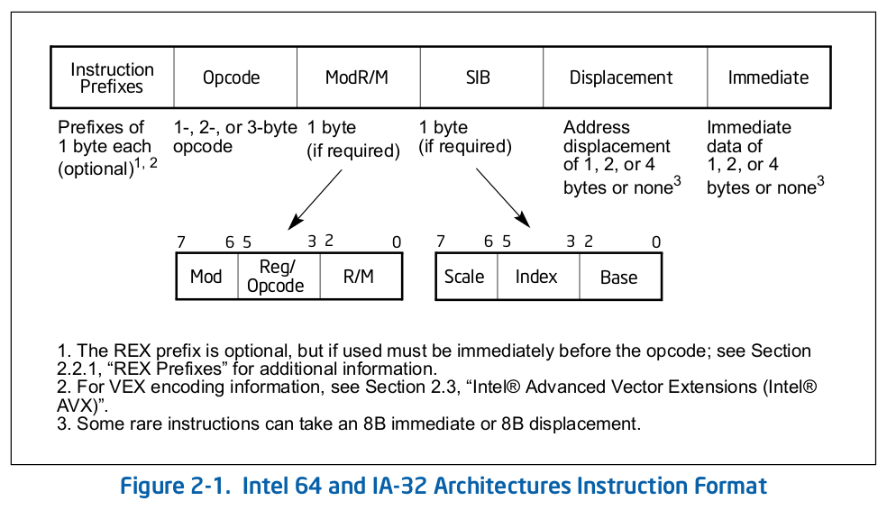

2_chap2-instruction_format
 times read
times read
Contents
IA-32 汇编语言的格式为 : label: mnemonic argument1 , argument2 , argument3 .
其中 :
- label 是后面跟有冒号的标识符 .
- mnemonic 是具有相同功能的一类指令操作码的保留名称 .
- 操作数 argument 1 2 3 是可选的 , 操作数可能有 0-3 个 , 取决于操作码 . 数学运算或者逻辑运算中有两个操作数时 , 右边的操作数是源 , 左边的是目的 .
1. Instruction Format for Protected Modes , Real-Address Modes , and Virtual-8086 Mode
Intel 64 和 IA-32 架构的指令编码是下图中格式的子集 , 指令包括可选的指令前缀 , 基本的操作码字节 ( 最多 3 个字节 ) , 一个由 ModR / M 字节或者 SIB ( Scale-Index-Base ) 字节组成的寻址形式区分标志 ( 如果需要的话 ) , 一个 displacement ( 如果需要的话 ) , 和一个立即数据域 ( 如果需要的话 ) .

1.1. Instruction Prefixes
指令前缀分成四组 , 每组都包括一些被允许的前缀码 , 4 种前缀码 , 每个指令只需要包含每组前缀中的一个前缀 , 4 组前缀可以按照任意顺序排列 .
-
Group 1
- Lock and repeat prefixes :
- 锁前缀编码为 F0H
- REPNE / REPNZ 前缀通过 F2H 编码 , Repeat-Not-Zero 前缀只适用于字符串和 input / output 指令 ( F2H 是一些指令必须前缀 )
- REP 或者 REPE / REPZ 编码为 F3H , repeat 前缀只能用于字符串和 input / output 指令 , F3H 也是 POPCNT , LZCNT 和 ADOX 指令的必须前缀
- 如果下列条件为真 , BND 前缀使用 F2H 编码 :
- 设置了 CPUID ( EAX=07H, ECX=0 ):EBX.MPX[bit 14]
- 设置了 BNDCFGU.EN 和 / 或 IA32_BNDCFGS.EN
- F2 前缀之前有一个 near CALL , near RET , near JMP , short Jcc , 或者 near Jcc
- Lock and repeat prefixes :
-
Group 2
- Segment override prefixes :
- 2EH – CS 段 override ( use with any branch instruction is reserved )
- 36H – SS 段 override ( use with any branch instruction is reserved )
- 3EH – DS 段 override ( use with any branch instruction is reserved )
- 26H – ES 段 override ( use with any branch instruction is reserved )
- 64H – FS 段 override ( use with any branch instruction is reserved )
- 65H – GS 段 override ( use with any branch instruction is reserved )
- Branch hints :
- 2EH – 分值没有执行 ( 只用于 Jcc 指令 )
- 3EH – 分支执行 ( 用于 Jcc 指令 )
- Segment override prefixes :
-
Group 3
- operand-size override prefix 编码为 66H ( 66H 也是一些指令的必须前缀 )
-
Group 4
- 67H – address-size override prefix
锁前缀 ( F0H ) 确保多处理器环境对于共享内存的互斥访问 .
重复前缀 ( F2H , F3H ) 针对一个字符串的每个元素重复一个指令 , 这些前缀只能和字符串和 IO 指令 ( MOVS , CMPS , SCAS , LODS , STOS , INS , OUTS ) 搭配使用 . 重复前缀和 / 或未定义操作码搭配其他 Intel 64 或 IA-32 指令是保留的 , 这些用法会导致无法预测的行为 .
一些指令可以使用 F2H , F3H 作为一个必要前缀 , 实现不同的功能 .
branch hint 前缀允许程序暗示处理器一个分支最可能的代码路径 , 这些前缀只能和条件分支指令 ( Jcc ) 搭配使用 , 分支暗示前缀和 / 或未定义操作码搭配其他 Intel 64 或 IA-32 指令是保留的 , 这些用法会导致无法预测的行为 .
操作数大小重载前缀允许程序在 16 位和 32 位操作数大小间切换 , 某种大小可以是默认值 , 使用前缀会选择非默认值 .
一些 SSE2 / SSE3 / SSSE3 / SSE4 指令和使用 3 字节序列的基本操作码字节的指令可以使用 66H 作为必需前缀 , 实现不同的功能 .
对于 66H 的其他使用时保留的 , 这些用法会导致无法预测的行为 .
地址大小重载前缀 ( 67H ) 允许程序在 16 位和 32 位地址间切换 , 两种大小都可以是默认值 , 前缀选择非默认值 . 指令的操作数不在内存中时使用这个前缀和 / 或其他未定义的操作码是保留的 ; 这种用法会导致无法预测的行为 .
1.2. Opcodes
基本的操作码长度可以是 1 , 2 , 3 字节 , 额外的 3 bit 操作码有时编码在 ModR / M 字节 , 类似的域可以定义在基本操作码 . 这些域定义了操作的方向 , displacement 的大小 , 寄存器编码 , 条件代码 , 或符号扩展 . 操作码使用的编码域根据操作的种类有所不同 .
通用的两字节操作码和 SIMD 指令由下面之一组成 :
- 一个转义操作码字节 0FH 作为基本操作码 , 一个第二操作码字节
- 一个必需前缀 ( 66H , F2H , F3H ) , 一个转义操作码字节 , 一个第二操作码字节
例如 , CVTDQ2PD 由下面的序列组成 : F3 0F E6 . 第一个字节是必需前缀 ( 而不是一个重复前缀 ) .
通用的 3 字节操作码格式和 SIMD 指令由下面一种组成 :
- 一个转义操作码字节 0FH 作为基本操作码 , 加上两个额外的操作码字节
- 一个必需前缀 ( 66H , F2H , F3H ) , 一个转义操作码字节 , 加上两个额外的操作码字节
例如 , XMM 寄存器的 PHADDW 指令由下面的序列组成 : 66 0F 38 01 . 第一个字节是必需前缀 .
1.3. ModR / M and SIB Bytes
引用内存中操作数的许多指令在基本的操作码后都有一个字节指明寻址方式 ( 称作 ModR / M 字节) , 包含下面三种信息域 :
- mod 和 r / m 域共同组成 32 个可能值 : 8 个寄存器和 24 个寻址模式
- reg / opcode 域指明一个寄存器号 , 或者 3 bit 的操作码信息 , reg / opcode 域的用法在基本操作码说明
- r / m 域可以指明一个寄存器为操作数 , 或者和 mod 域组合编码一个寻址模式 , 有时 mod 和 r / w 的某些组合用于表示一些指令的操作码信息
ModR / W 字节的某些编码需要一个第二寻址字节 ( SIB 字节 ) , 32 位寻址的 base-plus-index 和 scale-plus-index 形式需要 SIB 字节 . SIB 字节包括下列域 :
- scale 域指明比例系数
- index 域指明索引寄存器的寄存器号
- base 域指明基寄存器的寄存器号
1.4. Displacement and Immediate Bytes
一些寻址形式包括一个 ModR / W 字节后的立即代替 ( displacement immediately ) , 可以是 1 , 2 , 4 字节 .
如果一个指令指明了立即数操作数 , 操作数通常跟着任何替代字节 , 一个立即数操作数可以是 1 , 2 , 4 字节 .
1.5. Addressing-Mode Encoding of ModR / M and SIB Bytes
这部分内容由 4 个表格组成 , 需要时直接查阅 SDM Vol-2 , 2.1.5 小节 .
2. IA-32e Mode
IA-32e 包含两个子模式 :
- 兼容模式 , 64 位操作系统执行大部分未修改的传统保护模式软件 .
- 64-bit 模式 , 64 位操作系统运行访问 64 位地址空间的应用 .
2.1. REX Prefixes
REX 前缀是 64 位模式使用的指令前缀字节 , 用来 :
- 指明 GPR 和 SSE 寄存器
- 指明 64 位操作数大小
- 指明扩展的控制寄存器
64 位模式不是所有的指令需要 REX 前缀 , 当且仅当指令引用扩展寄存器之一或者使用 64 位操作数时才需要一个前缀 . 如果使用 REX 前缀 , 但是没有含义 , 会被直接忽略 .
每条指令只能有一个 REX 前缀 , 使用时 , REX 前缀字节必须在操作码字节或者转义操作码字节前 ; 用在包含必需前缀的指令中时 , REX 必须跟在必须前缀后 .
2.1.1. Encoding
Intel 64 和 IA-32 指令格式通过编码中的 3-bit 指明了最多三个寄存器 , 取决于格式 :
- ModR / M : ModR / M 字节的 reg 和 r / m 域
- 带有 SIB 的 ModR / M : ModR / M 字节的 reg 域 , SIB 的 base 和 index 域
- 没有 ModR / M 的指令 : 操作码的 reg 域
64 位模式 , 这些格式没有变化 , 需要定义域的 bit 由 REX 前缀额外提供 .
2.1.2. More on REX Prefix Fields
REX 前缀是一组 16 个操作码 , 占用 40H 到 4FH . 这些操作码代表 IA-32 操作模式和兼容模式下的有效指令 ( INC 或 DEC ) . 64 位模式 , 同样的操作码代表指令前缀 REX , 没有被当做单独的指令 .
INC / DEC 指令的单字节操作码形式 64 位模式下不可用 , INC / DEC 功能可以通过相同指令的 ModR / M 形式实现 .
2.1.3. Displacement
64 位模式的寻址使用已有的 32 位 ModR / M 和 SIB 编码 , ModR / M 和 SIB 替代大小没有改变 , 剩余 8 位或 32 位符号扩展到 64 位 .
2.1.4. Direct Memory-Offset MOVs
64 位模式 , MOV 指令的直接内存偏移形式被扩展指明 64 位立即数绝对地址 , 这个地址成为 moffset , 这个内存偏移不需要前缀 . 这些 MOV 指令的内存偏移大小遵循地址大小的默认值 . 这些指令格式如下 :
| Opcode | Instruction |
|---|---|
| A0 | MOV AL, moffset |
| A1 | MOV EAX, moffset |
| A2 | MOV moffset, AL |
| A3 | MOV moffset, EAX |
2.1.5. Immediates
64 位模式 , 立即数操作数的典型大小保持 32 位 , 如果操作数是 64 位 , 处理器在使用前符号扩展所有的立即数为 64 位 .
对于 64 位立即数操作数的支持通过扩展现有的 MOV 指令 ( MOV reg, imm16/32 ) 语义完成 . 这些指令 ( opcode B8H - BFH ) 移动 16 位或 32 位立即数到一个通用寄存器 . 操作数为 64 位时 , 这些指令可以用于加载一个立即数到 GPR , 需要一个 REX 前缀重载 32 位默认操作数大小为 64 位操作数 .
2.1.6. RIP-Relative Addressing
新的寻址方式 , RIP 相对寻址 ( 相对指令指针 ) 在 64 位模式实现 , 一个有效地址通过把 displacement 加到下一条指令的 64 位 RIP 组成 .
IA-32 架构和兼容模式下 , 相对于指令指针的寻址只能通过 control-transfer 指令实现 . 64 位模式 , 使用 ModR / M 寻址的指令可以使用 RIP 相对寻址 ; 没有 RIP 相对寻址 , 所有的 ModR / M 模式的地址内存相对于 0 .
RIP 相对寻址允许特定的 ModR / M 模式通过有符号的 32 位 displacement 寻址相对于 64 位 RIP 的内存 , 提供一个相对于 RIP 前后 2GB 的偏移范围 .
RIP 相对寻址由 64 位模式开启 , 而不是 64 位地址大小开启 , 地址大小前缀不会关闭 RIP 相对寻址 , 前缀只会阶段有效地址 , 然后 0 扩展为 32 位 .
2.1.7. Default 64-Bit Operand Size
64 位模式 , 两组指令的默认操作数大小为 64 位 :
- near 分支
- 所有隐式引用 RSP 的指令 , 除了 far 分支
Author Globs Guo
LastMod 2020-09-14